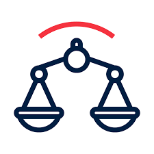
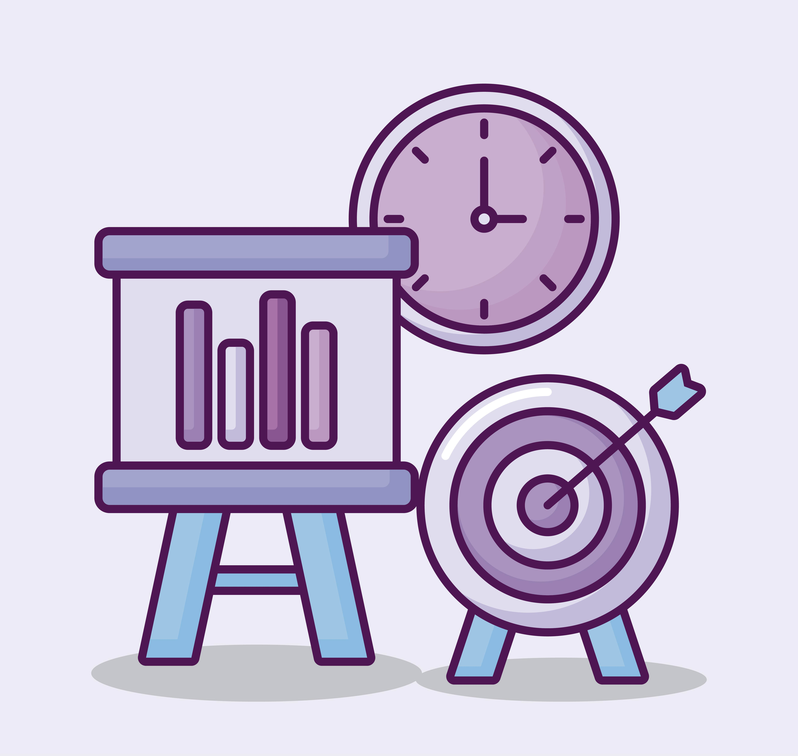

Satisfacer las necesidades de las partes interesadas.
Cobertura de extremo a extremo de la organización.
Aplicación de un marco único e integrado.
Enfoque holístico para la gobernanza.
Separación del gobierno y la gestión.
Optimización del sistema de gobernanza.


2. Objetivos
EDM: Evaluar, Dirigir y Monitorizar (Gobernanza).
APO: Alinear, Planear y Organizar (Gestión estratégica).
BAI: Construir, Adquirir e Implementar (Desarrollo de TI).
DSS: Entregar, Dar Soporte y Servicio (Operaciones y soporte).
MEA: Monitorear, Evaluar y Valorar (Supervisión y control).
3. Componentes del Sistema de Gobernanza
Procesos: Conjunto de actividades y mejores prácticas de TI.
Estructuras organizativas: Roles y responsabilidades.
Principios, políticas y marcos: Normativas y reglas.
Información: Datos críticos para la gestión de TI.
Cultura, ética y comportamiento: Factores humanos clave.
Personas, habilidades y competencias: Capacitación del talento humano.
Servicios, infraestructura y aplicaciones: Recursos tecnológicos clave.
COBIT permite medir el desempeño de la gobernanza y gestión de TI mediante modelos de madurez, proporcionando un marco estructurado para evaluar y mejorar continuamente los procesos de TI dentro de una organización.